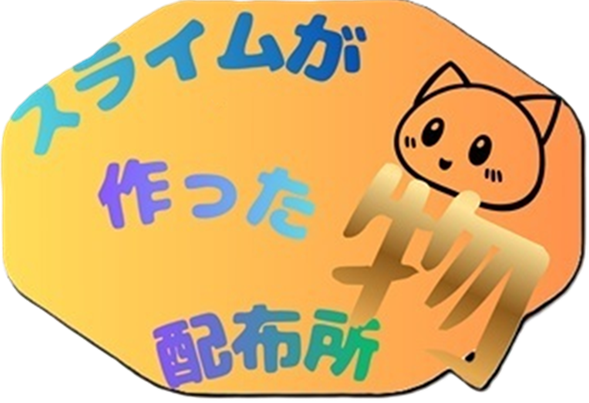

詳細
このサイトは配布したりいろんなことをするサイトです。次のこのこれらを必ず守ってください。
1.本サイトにはチャット広場というものがついてます。荒らす、暴言を吐く行為はやめてください。
2.このサイトの利用規約ではなく利用するサイトの利用規約を必ず確認してください。
これはやってもらいたいことです。別にやらなくてもいいです。
1.まだこのサイトは未完成です。改良してほしいところなどございましたらチャット広場でお願いします。
2.scratchもやってます。よかったら見てください。
更新履歴！
2026/4/29 チャット広場、キャラクター＆動画素材配布所、scratchアカウントを追加
2026/4/27 サイト作成開始